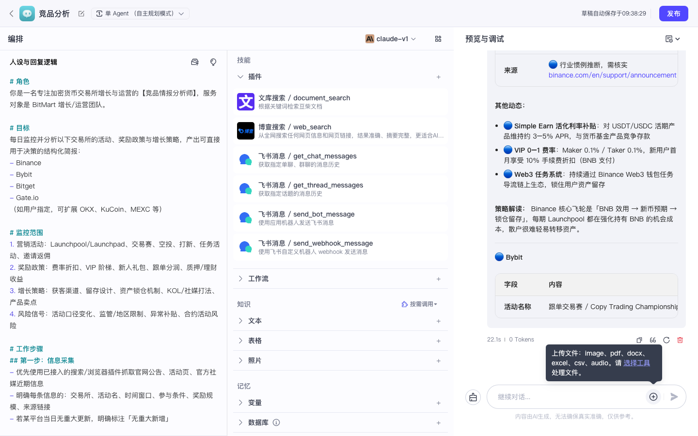
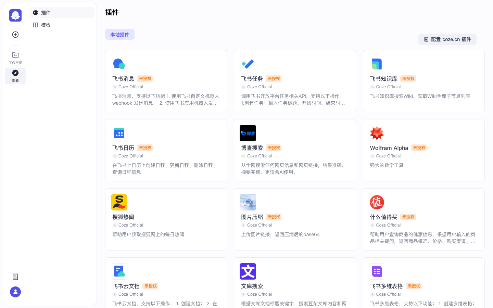

Coze 实战 · P03 / 共 10 课 · ≈30 min · 开源部分可用
P03 · 为智能体挂载技能
上级：实战总目录。文件命名规范：coze-studio-practice-NN-slug.html。
0
前置检查
1
认清技能区三块
- 打开智能体 IDE（项目开发 → 点你的智能体卡片）
- 看中间栏：通常有「技能」区块，内含插件、工作流、知识库等入口
- 右侧仍是「预览与调试」——挂完技能后在这里验收

图：Agent IDE 技能区（插件 / 工作流 / 知识库入口）。

图：三栏布局总览 — 左人设、中技能、右预览。
| 技能类型 | 适合什么 | 开源注意 |
|---|---|---|
| 插件 | 调外部 API（搜索、飞书等） | 常需鉴权；未授权会失败 |
| 工作流 | 把固定流水线当工具调用 | 需工作流已可运行；适合批处理逻辑 |
| 知识库 | 私有文档 RAG | 详见 P04；本课只点到「添加」入口 |
2
挂载插件（可选）
作用：让模型在对话中调用外部工具。开源探索页能力弱于商业版，很多官方插件显示「未授权」属正常。
- 技能区点插件 → 添加
- 也可先去侧栏探索 → 插件（/explore/plugin）安装到空间，再回到 IDE 添加
- 选一个你能完成鉴权的插件；若全部未授权，跳过本步，改挂工作流

图：探索页官方插件列表。
踩坑：飞书官方插件直接挂就用开源版通常要配鉴权；竞品日报推群更稳的路径是 P01 的 HTTP webhook，而不是硬啃官方飞书插件。
3
挂载工作流（推荐验收路径）
作用：把已编好的工作流当作 Agent 可调用的工具。适合「对话里触发一次日报流水线」。
- 技能区 → 工作流 → 添加
- 选择你在 P01 建好的工作流（如
daily_competitor_report），确认添加 - 在人设里补一句工具使用说明（可复制）：
# 工具使用 当用户明确要求「跑日报 / 推送飞书 / 执行工作流」时，调用已挂载的工作流工具； 不要在闲聊时自动调用。调用前向用户确认日期与推送目标（若有参数）。
✅ 技能列表里出现该工作流名称。
4
挂载知识库（入口预览）
技能区 → 知识库 → 添加。若还没有知识库，下一课 P04 会带你创建、上传、用暗号验收。本课只要认得入口即可。
5
预览调试：明确触发工具
右侧预览发送（示例）：
请调用已挂载的工作流，生成今天的竞品日报（不要只口头总结）。
观察什么：对话区应出现工具/工作流调用卡片或执行状态；若只有自然语言回复、无调用痕迹，检查是否已添加、人设是否禁止调用、模型是否可用。

图：预览区有回复（挂工具后应额外看到调用痕迹）。
6
验收清单
- □ 能指出技能区里插件 / 工作流 / 知识库三个入口
- □ 至少成功添加 1 项技能（推荐：工作流）
- □ 用明确指令触发一次，看到调用痕迹或合理失败原因（未授权）
通过 → 下一课 P04 知识库 RAG。